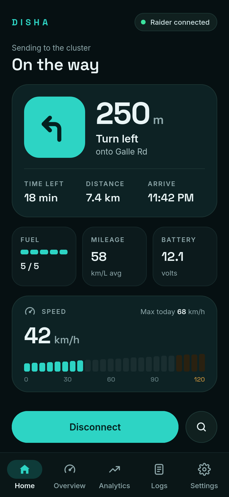
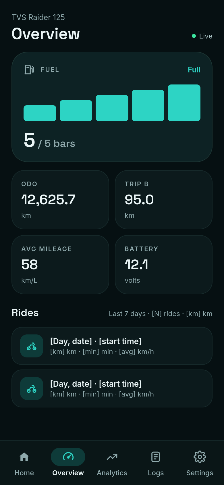
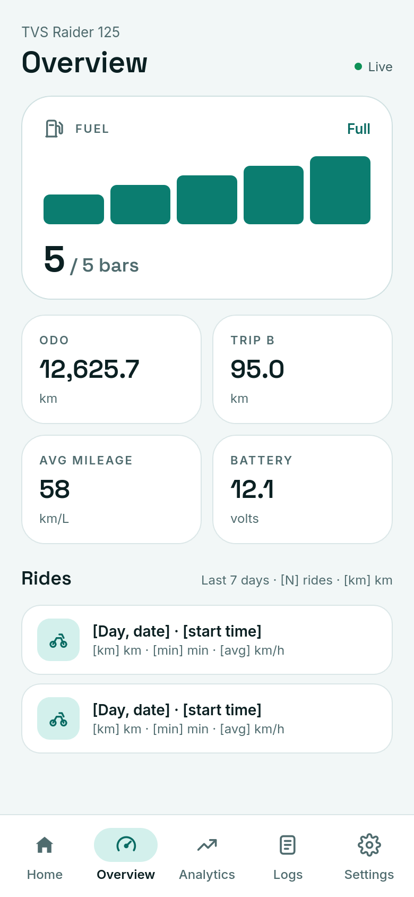
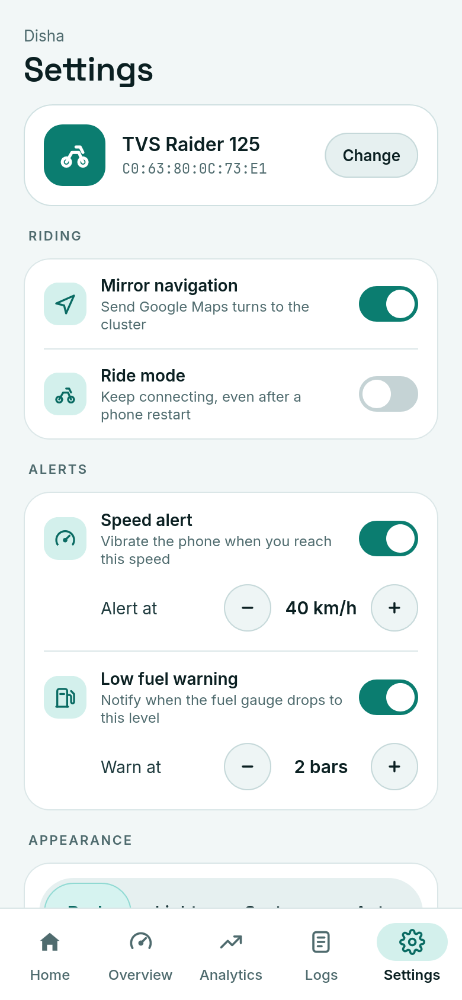
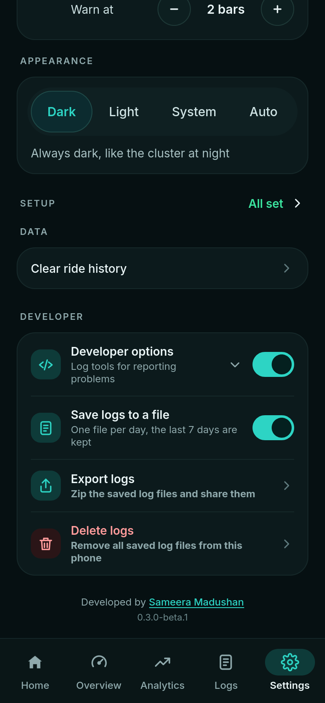
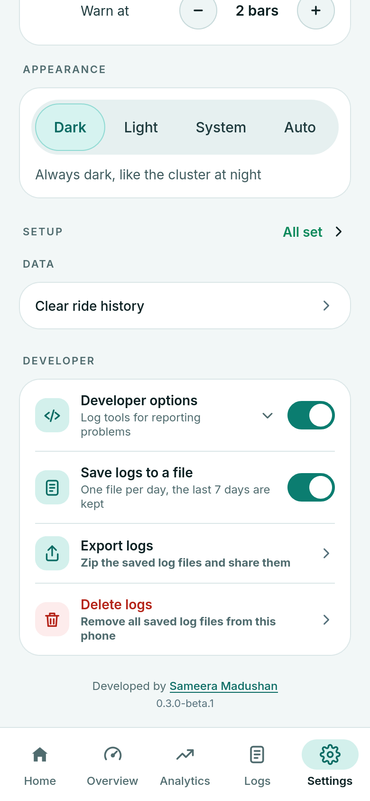
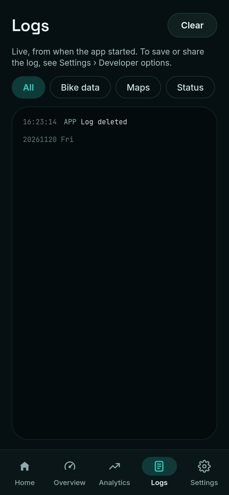

Disha
Google Maps on your
bike's cluster
Disha puts turn-by-turn directions on your TVS Raider's display, so your phone can stay in your pocket.











What it does
No separate maps, no downloads, no account.
Connects to the bike when you start navigating.
Fuel, odometer, trip B, average mileage and battery, read live from the bike.
The phone vibrates at the speed you set, even on silent, and warns you when fuel runs low.
Every ride kept. Distance, riding time, speed and mileage by week, month, year or all time, with a chart.
Asks you to turn on Bluetooth if it's off, and tapping the navigation card opens the trip in Google Maps.
Dark, light, follow your phone, or let it go dark by itself from 6 PM to 6 AM.
No internet permission. Nothing leaves your phone.